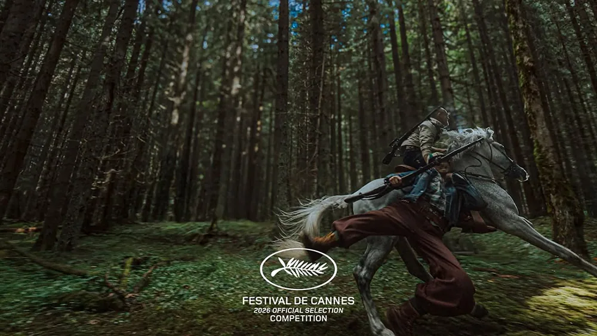
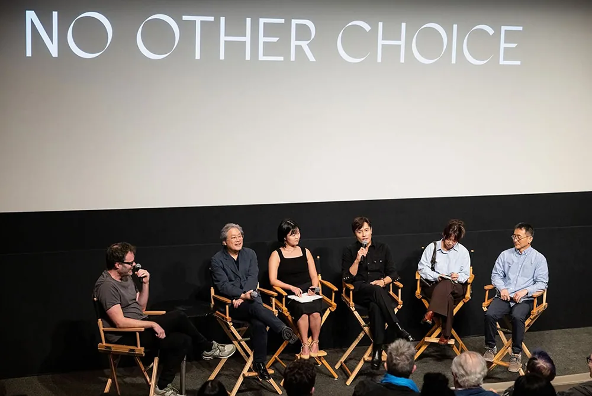
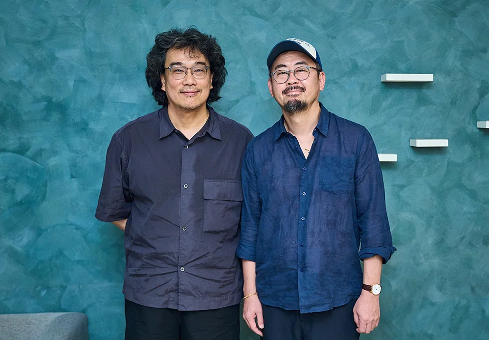

한국영화의 글로벌 진출을 설명하는 방식이 달라졌다. 과거 한국영화의 해외 진출은 ‘외국어영화의 성공’이라는 틀에서 설명됐다. 미국 시장에서는 한국영화라는 사실 자체가 차별화된 마케팅 포인트였고, 북미 관객에게는 자막을 읽어야 하는 아시아영화라는 인식이 여전히 강했다. 그러나 지금의 한국영화는 더 이상 그 범주에 머물지 않는다. 봉준호 감독의 <기생충>(2019)이 칸국제영화제(이하 칸영화제) 황금종려상과 미국 아카데미 시상식(이하 오스카) 작품상을 거머쥔 이후 한국영화의 글로벌 위상은 질적으로 달라졌다. 이 변화의 한가운데에는 북미 독립 배급사 네온(NEON)이 있다. 네온은 단순히 한국영화를 미국에 소개하는 배급사가 아니다. 칸영화제에서 발견한 작가주의 영화를 북미 극장에 연결하고 작품의 개성과 감독의 창작적 의도를 유지하면서 장기적인 관객층을 만들어 내며, 필요할 경우 오스카 캠페인까지 이어 가는 독특한 배급 모델을 구축해 왔다.


네온이 선보인 <호프> 북미 포스터(왼쪽)와 샌디에이고 코믹콘 포스터(제공=네온 페이스북)
네온이 선보인 <호프> 북미 포스터(위쪽)와 샌디에이고 코믹콘 포스터(제공=네온 페이스북)
네온 대표 톰 퀸의 선구안
칸영화제 황금종려상은 영화 세계의 최고 권위를 상징한다. 그 수상작을 북미에 배급하는 일은 단순한 비즈니스를 넘어, 탁월한 안목과 확신을 동시에 증명하는 과정이다. 배급사 네온은 2019년 봉준호 감독의 <기생충>을 시작으로, 코로나19로 행사가 축소된 2020년을 제외하고 2021년 <티탄>, 2022년 <슬픔의 삼각형>, 2023년 <추락의 해부>, 2024년 <아노라>, 2025년 <그저 사고였을 뿐>, 그리고 2026년 <피오르>까지 7회 연속 황금종려상 수상작의 북미 판권을 확보하는 전무후무한 기록을 세웠다. 이 기록의 중심에는 네온의 공동 창업자이자 CEO인 톰 퀸이 있다. 톰 퀸 대표는 “칸에 가서 ‘이번에 황금종려상을 따야지’라고 생각한 적은 한 번도 없다”며 “좋은 취향을 탓하지 말라”고 웃으며 말한다. 하지만 황금종려상을 받을 작품의 북미 권리를 미리 사들이는 능력은, 네온이 단순히 유행을 좇는 배급사가 아니라 작품의 본질을 먼저 읽어 내는 선구안을 지녔음을 보여 준다.
네온은 설립 9년 만에 독보적인 성과를 거두며 총 57개 부문 오스카 후보에 올랐다. 그중 봉준호 감독의 <기생충>과 션 베이커 감독의 <아노라>로 오스카 작품상을 수상했고, 2026년 요아킴 트리에 감독의 <센티멘탈 밸류>가 국제장편영화상을 받아 총 11회 수상 기록을 달성했다.
올해 네온은 나홍진 감독의 <호프> 북미 판권을 확보했고, 내년 개봉 예정인 봉준호 감독의 첫 장편 애니메이션 <앨리> 배급까지 확정했다. 네온의 한국영화 배급 이력은 <기생충>, <올드보이> 재개봉(2023), <어쩔수가없다>(2025)로 이어지며, 여기에 <호프>와 <앨리>가 더해진 것이다. 톰 퀸 대표 개인의 한국영화 인연은 이보다 훨씬 오래됐다. 그는 네온 창업 이전 매그놀리아 픽처스, 라디우스-TWC(와인스틴 컴퍼니) 재직 시절 <괴물>(2006), <마더>(2009), <설국열차>(2013)의 북미 배급을 각각 주도했으며, 이 오랜 신뢰 관계가 이후 네온이 한국영화의 최적 파트너로 자리 잡는 토대가 되었다. 특히, <기생충>의 신화 이후 네온은 한국 장르 작가주의 영화의 북미 게이트키퍼 역할을 하며, 한국 감독들에게 ‘두 번째 시장’을 제공하고 있다.


<어쩔수가없다>의 골든글로브 후보 지명과 오스카 국제장편영화상 쇼트리스트 포함(위),
<호프>의 칸영화제 경쟁 부문 초청 소식을 전한 네온(제공=네온 페이스북)
한국영화의 위상과 네온의 선택 기준
현재 북미 시장에서 한국영화는 더 이상 ‘미지의 이국적 콘텐츠’가 아니다. <기생충>이 거둔 역사적 성공 이후, 한국영화는 북미 관객에게 하나의 지속 가능한 ‘카테고리’로 인식되기 시작했다.
인디 배급사 네온에게 “영화가 무엇에 관한 이야기인가”만큼 중요한 것은 “누가 만들었는가”이다. 이러한 접근법은 감독의 작가주의적 개성이 뚜렷한 한국영화와 완벽한 합을 이룬다. 봉준호의 장르 혼합, 박찬욱의 미학적 연출, 나홍진의 집요한 인간 심리 추적처럼 감독의 이름 자체가 곧 하나의 브랜드가 되기 때문이다. 네온은 한국 특유의 ‘감독 중심 생태계’를 북미 시장의 강력한 가치로 전환시켰고, 관객들은 영화의 국적이 아닌 감독의 이름을 믿고 극장으로 향하게 되었다.
톰 퀸 대표는 “한국영화가 네온의 기준에 가장 잘 부합한다”고 단언한다. <기생충>의 북미 배급권을 완성본이 아닌 스크립트 단계에서 인수한 이유 역시 독창성과 완성도에 대한 확신 때문이었다. 톰 퀸 대표는 봉준호 감독의 거의 모든 작품에 대한 북미 시사회 테스트 점수를 보유하고 있다. <괴물> 이후 배급한 봉준호 감독의 영화들이 비영어권 영화로서는 우수한 수준인 60%대를 받았는데, <기생충>은 무려 90%대 초반이 나왔다. 여기에 로튼토마토 100% 신선도, 칸영화제 황금종려상 수상이라는 모멘텀, 비수기 개봉 전략이라는 시기적 이점이 결합되어 한국영화에 주목해 온 인디 배급사가 마침내 세계 영화계의 중심으로 우뚝 선 결정적 계기가 만들어졌다.
네온의 작품 선정 기준은 명확하다. “작가주의적이면서도 무언가 할 말이 있는 영화, 문화적 무게감과 예술적 완성도를 갖춘 영화”를 찾는다. 폭력성이나 비영어권 콘텐츠에 거부감이 없는 관객층을 겨냥한다. 한국영화는 ‘장르적 재미’와 ‘작가주의적 완성도’라는 양립하기 힘든 두 요소를 결합해 이 기준을 충족시킨다. 톰 퀸 대표가 봉준호 감독을 일컬어 “그 자체로 하나의 장르”라고 표현했듯, 네온 창립 초기부터 톰 퀸은 “봉준호가 어디서, 무엇을, 어떤 방식으로 만들든 무조건 함께하겠다는 것이 확고한 원칙”이라고 밝혔다.


할리우드 배우 빌 헤이더가 진행을 맡은 네온 주최 <어쩔수가없다> 북미 특별 시사회(위),
<어쩔수가없다>를 활용해 2026년 여름 인턴십 채용 공고를 낸 네온(제공=네온 페이스북)
웰고USA, 무비와는 다른 포지셔닝
미국 배급사마다 한국영화를 대하는 방식은 다르다. 웰고USA(Well Go USA)는 장르와 액션, 한국을 포함한 아시아영화 배급에 확실한 강점이 있다. 오는 8월 28일 북미 개봉하는 연상호 감독의 <군체>처럼 상업적 흡입력이 명확한 작품을 극장 특유의 대형 스크린과 몰입감 속에서 선보이는 데 능하다. 특히 웰고USA는 <군체>의 개봉에 앞서 연상호 감독을 세계에 알린 대표작 <부산행>(2016)의 4K 리마스터링 버전을 2주 먼저 북미 지역 500여 개 상영관에서 재개봉했다. 관객과의 접점을 넓히는 전략이다.
반면 무비(MUBI)는 큐레이션과 아트하우스, 스트리밍 플랫폼으로서의 정체성이 강하다. 박찬욱 감독의 <헤어질 결심>(2022) 같은 세련된 작가주의 영화를 확고한 취향을 가진 공동체에 소개하는 데 능하다. 현지 필름메이커와 관객들 사이에서는 무비를 ‘취향의 필터’로 받아들이는 경향이 크다. 이 두 배급사들이 한국영화 판권을 따내려는 이유는 명확하다. 웰고USA는 장르 관객의 안정적 수요를, 무비는 큐레이팅된 프리미엄 콘텐츠의 차별화를 원해서다.
네온은 이 둘과는 다른 지점에 있다. 네온은 칸영화제 프리미어와 극장·플랫폼 공개를 유기적으로 결합한 뒤 필요에 따라 장르 마케팅 머신을 가동한다. 박찬욱 감독의 <어쩔수가없다>는 단 13개 극장에서 시작해 695개 관까지 상영관을 확대했다. 확대 개봉 당일 박스오피스 9위, 최종 흥행 수익 1천만 달러를 돌파하며 박찬욱 감독의 북미 최고 흥행 기록을 새롭게 썼다. 오스카 후보 지명 제외 이후 위트 있게 대응한 빌보드 캠페인처럼 네온은 시상식 시즌의 서사도 적극적인 마케팅 자산으로 활용한다. 네온은 다른 외국어영화에는 표준적인 아트하우스 배급 공식을 적용하면서도, 한국영화에만큼은 ‘장르와 권위의 하이브리드’ 플레이북을 가동한다. 타깃을 젊은 장르 팬층까지 확장하고, 입소문을 단계적으로 통제하며 넓혀 가는 전략을 사용한다.

<어쩔수가없다>의 오스카 후보 지명 실패 이후 네온이 진행한 빌보드 캠페인.
영화의 한 장면을 활용해 ‘For Your Consideration’에서 ‘or’을 가리고 ‘F’만 드러낸 위트를 보여 줬다(제공=네온 인스타그램)
<호프>와 <앨리>, 그리고 오스카 레이스
네온이 수많은 기대작 중 <호프>와 <앨리>를 택한 이유는 명확하다. 우선 <앨리>는 봉준호 감독과의 여섯 번째 협업이자, 애니메이션·가족영화로의 확장을 의미한다. 남태평양 심해 새끼 오징어를 주인공으로 한 독창적 세계관, 브래들리 쿠퍼·아요 에데비리 등 화려한 성우진을 갖춘 가족 어드벤처 영화이자 봉준호라는 한국 감독의 상상력이 글로벌 제작 시스템과 결합해 처음부터 세계를 무대로 만들어지는 영화다. <앨리>는 네온의 배급으로 2027년 북미 와이드 개봉을 목표로 준비 중이다.


올해 샌디에이고 코믹콘에 참여한 나홍진 감독(위),
국내에서 진행된
<호프> 스페셜 릴레이 GV에 참석한 봉준호 감독과 나홍진 감독
(제공=플러스엠 엔터테인먼트)
<호프>는 나홍진 감독의 10년 만의 신작이자 첫 칸영화제 경쟁 부문 진출작이다. 네온은 완성본을 보기 전인 2025년 11월부터 이미 판권 계약을 추진해 칸영화제 전에 북미·영국·호주 배급 권리를 확정했다. 제작 규모, 한국 톱스타들과 마이클 패스벤더·알리시아 비칸데르 등의 캐스팅, 그리고 SF 크리처 스릴러 장르 설정이 네온이 겨냥하는 “폭력과 외국어에 거리낌 없는” 관객층과 완벽히 맞물린다. 오는 9월 9일 북미 개봉을 앞둔 <호프>에 대해 네온은 토론토국제영화제 직전이라는 전략적 개봉 창구를 선택했다. 라스베이거스 시네마콘에서의 푸티지 공개, 샌디에이고 코믹콘을 통한 팬덤 공략 등 장르 팬들을 밀착 타깃팅하고 있다.
네온은 나홍진 감독의 <호프>를 미국 전역 프리미엄 스크린에서 조기 상영하는 전략을 택했다. 9월 7일 하룻밤 동안 175개 프리미엄 상영관에서 오후 6시 30분 특별 상영회를 열고, 9월 9일 본격 개봉에 앞서 입소문을 유도한다. 돌비 시네마·4DX·ScreenX·Barco HDR·D-Box·돌비 애트모스 등 6가지 대형·특수 포맷으로 뉴욕, LA, 시카고, 샌프란시스코, 댈러스 등에서 진행된다. 이는 지난해 네온이 호러 무비 <더 몽키>를 프리미엄 선공개로 입소문을 키워 4천만 달러 흥행을 이끌어낸 방식과 동일한 전략이다. 제한 개봉으로 모멘텀을 구축한 뒤 와이드 개봉으로 확장하는 수순을 밟는다면, 오스카 레이스 전략 역시 훨씬 다채로워질 전망이다. 경쟁이 치열한 국제장편영화상 외에도 주요 부문까지 공략 범위를 넓힐 수 있기 때문이다. 이에 맞춰 네온은 칸영화제에서의 화제성을 살린 전략적 개봉, 투표자 대상 스크리닝 확대, 독창적인 아웃도어·바이럴 마케팅을 유기적으로 전개할 것으로 보인다.
네온에게 한국영화는 단순히 ‘우수한 외국영화’가 아니라, 아트하우스와 장르, 시상식과 박스오피스를 동시에 사로잡을 수 있는 독보적 자산이다. 자막이라는 1인치의 장벽을 넘어선 극장가에서, <호프>와 <앨리>는 네온의 안목을 다시 한번 입증할 시험대가 될 것이다.